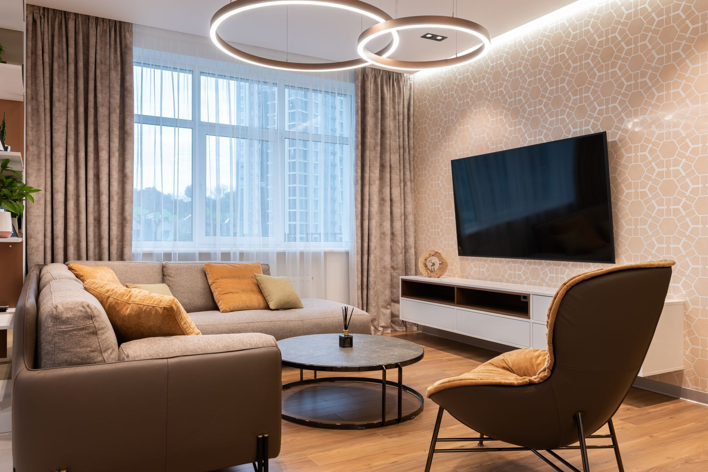
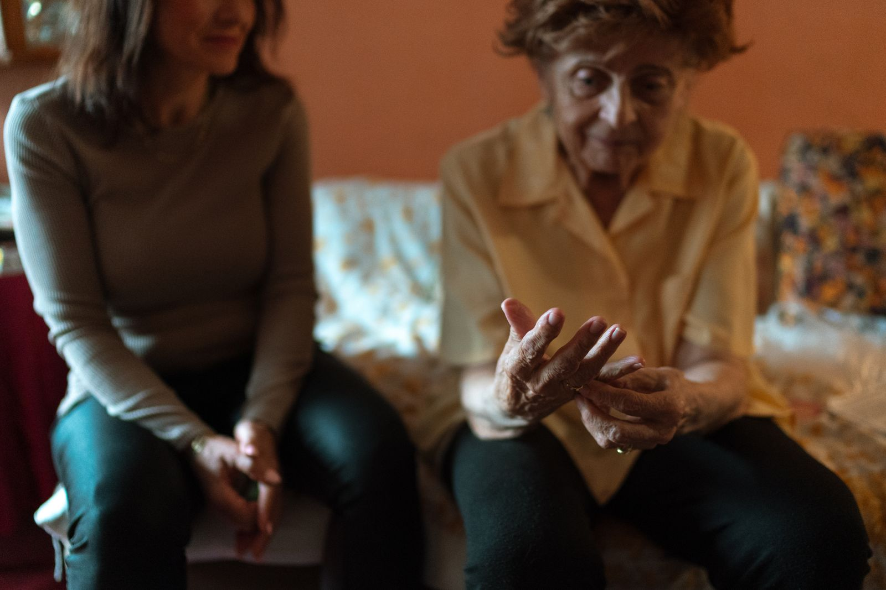

Two ways to feel supported
Our home. A companion in yours.
Looking for a welcoming boarding home? We offer one for independent adults. Prefer to stay in your own home? Request a companion for in-home visits.
Safe. Supportive. Respectful. Always.
to thrive.
Two ways we can help
A home here. Support in yours.
Ask about living in the Tru Luv home, or request a companion to visit you or a loved one at home.
A place to call home
Furnished rooms, daily meals, household essentials, and a welcoming community for adults able to live independently and self-evacuate.
Explore the home 02 / AT-HOME SUPPORTRequest a companion
Companionship and sitter visits for children and adults with disabilities, as well as older adults, in their own homes, arranged around individual needs.
See companion careOur people matter. Workers supporting residents and at-home clients are background-checked and trained for their roles.
Residential home services
The everyday comforts of home.
Our boarding home is for adults who can live independently and self-evacuate. A welcoming setting and practical daily services make it easier to feel at home.
Nutritional meals daily
Dependable meals prepared as part of the home’s daily routine.
Furnished rooms
Comfortable private or shared room options.
Utilities and housekeeping
A cared-for setting without the burden of managing a household alone.
On-site laundry facilities
Residents wash their own clothes using the laundry facilities.
Community and recreation
Friendly shared activities in a safe, home-like environment.
Internet and cable TV
Connection, entertainment, and familiar comforts.
Transportation may be available through a separate provider at an additional cost. Ask us about current options.

In-home companion & sitter care
Support at home, on your terms.
For children and adults with disabilities, as well as older adults, Tru Luv offers companion and sitter visits built around individual routines in their own homes. This is a separate service from our adult boarding home.
- Conversation, companionship, and social connection
- Sitter visits when family caregivers need a hand
- Help with everyday routines, based on the person’s needs
Call to discuss what support is available, visit schedules, and separate pricing. Nursing or medical services are not listed as part of companion and sitter care.
Request a companion
Customer experiences
Stories from the people we serve.
Experiences shared by Tru Luv residents and families.
Companion care
My father lives alone and struggles with mobility, so we hired Tru Luv’s companion sitters. They don’t just assist with meals and chores — they spend time talking with him, playing cards, and keeping him engaged. It feels like he has a friend, not just a caregiver.
Boarding home comfort
After rehab, I stayed at Tru Luv Home for a few months. The staff were welcoming, meals were dependable, and the environment felt safe. It was the perfect balance of independence and support while I regained my strength.
Family peace of mind
We moved our aunt into Tru Luv Home, and she’s thriving. She enjoys the shared activities and companionship, while we feel reassured knowing she’s cared for in a respectful environment. It’s more than a service — it’s a community.
Disability support
My son has a disability, and Tru Luv’s sitters have been incredible. They encourage his independence while providing the right level of assistance. He looks forward to their visits, and we appreciate the dignity and kindness they bring.
Contact us today
Let’s talk about what you need.
Speak with Mrs. A. Jones, Owner / Administrator, about a room in the home or a companion visit in yours. Requests are discussed and confirmed directly.